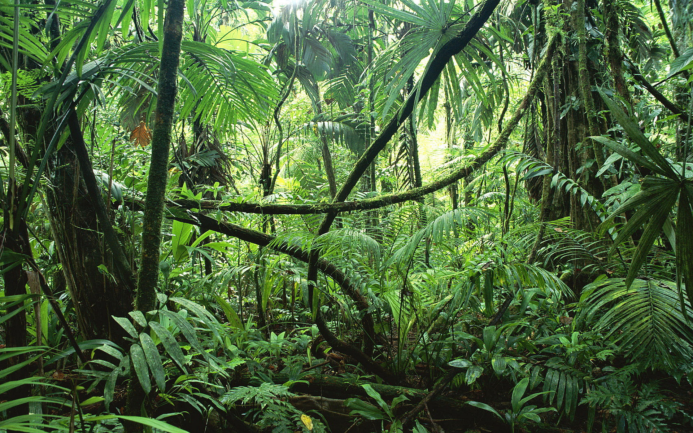
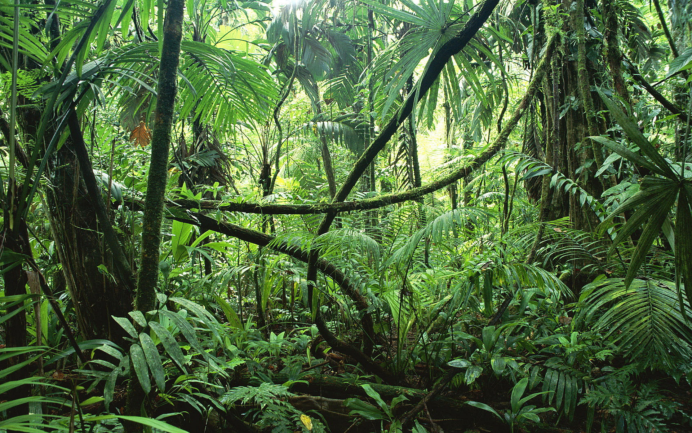
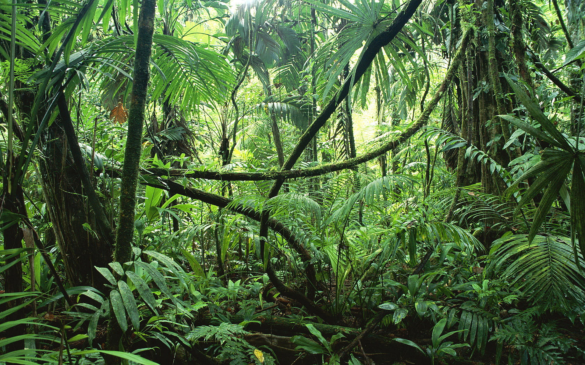

Spring
 


Project Description:
After learning the basic image manipulation techniques in this class, I found it fascinating that I could detect a certain spectrum of colors and change it at will.Spring

I decided to start with Spring. If anybody wishes to try this project for yourselves, make sure you choose a image that looks like it was taken in Spring.
So let's set Springas our starting point. Then I make a mask detecting the color green, and set everything in the given range a value of 1. Anything else gets a value of 0.
Here are the respective masks:
Masks

In the next step, for every value of 1 in the mask, I change the color in that specific pixel location.
I made 3 functions to replicate the seasonal changes: changeToSummer, changeToFall and changeToWinter. Here they are:
P.S. You can find my source code here: myproject1.py
Summer
Fall

Winter
CREDIT
Images were found at:
http://www.vbctulsa.com/wordpress/wp-content/uploads/2015/02/wrackthetree.jpg
http://kingofwallpapers.com/jungle/jungle-004.jpg
https://upload.wikimedia.org/wikipedia/commons/9/92/Christmas_tree_farm_IA.JPG
{kind=link}
{kind=link}
{kind=link}